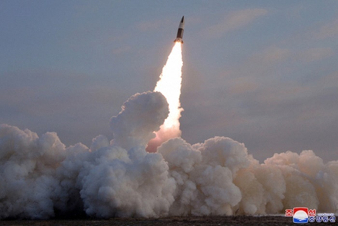

한국 합동참모본부는 이날 오전 11시 5분께 북한이 평안북도 동창리 일대에서 동해상으로 발사한 탄도미사일 1발을 포착했다며 이 미사일이 800여 km를 비행한 후 동해상에 탄착했다고 밝혔다.
합동참모본부는 이날 오전 11시 5분께 북한이 평안북도 동창리 일대에서 동해상으로 발사한 단거리탄도미사일 1발을 포착했다고 밝혔다. 올해 들어 일곱 번째 탄도미사일 발사다. 합참에 따르면 이 미사일은 800여 ㎞를 비행한 후 동해상에 탄착했다.
지난 14일 서울역 대합실에서 시민들이 북한의 단거리 탄도미사일(SRBM) 발사 관련 뉴스를 바라보고 있다. 북한은 14일 SRBM 2발을 발사한 데 이어 16일에는 대륙간 탄도미사일(ICBM) 1발을, 19일에는 SRBM 1발을 발사했다
북한이 19일 단거리 탄도미사일을 발사하며 이달 들어 4번째 미사일 시험을 이어갔다. 이에 대해 한미일 북핵 수석대표는 같은날 유선협의를 통해 유엔 안정보장이사회 결의 위반이자 한반도 및 역내 평화와 안정을 위협하는 도발이라고 규탄했다.
한국 합동참모본부는 이날 오전 11시 5분께 북한이 평안북도 동창리 일대에서 동해상으로 발사한 탄도미사일 1발을 포착했다며 이 미사일이 800여 km를 비행한 후 동해상에 탄착했다고 밝혔다. 앞서 북한은 한미연합연습 '자유의 방패'(프리덤실드·FS) 시작 하루 전인 12일 잠수함발사 순항미사일 2발을 발사했다. 이어 14일에는 단거리탄도미사일 2발을, 일본에서 한일 정상회담이 열렸던 16일에는 대륙간탄도미사일(ICBM) 1발을 발사했다. 한편 13일 시작된 FS 연습은 23일까지 11일 동안 진행된다. 북한은 올해 들어 탄도미사일만 총 7차례, 순항미사일까지 포함할 경우 총 9차례 미사일을 발사했다.